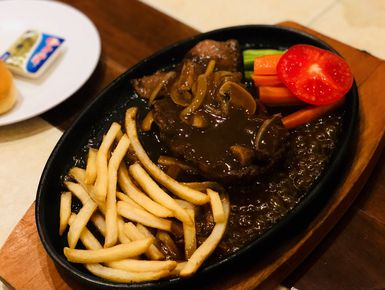
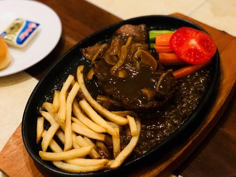
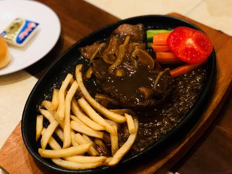

In addition to its history and culture, which have earned Surabaya the title “City of Heroes,” it is also well known for its rich and diverse culinary scene. From savory street foods to traditional dishes, Surabaya offers a unique taste experience reflecting its blend of Javanese, Chinese, Madurese, and Dutch influences.

These are the top three of my favourite local food/restaurant in Surabaya
(Sate Klopo, Tahu Tek, Bon Ami Steak).
Let’s start with Bon Ami Steak. For me, this wasn’t just food — it was part of my childhood, a staple of Surabaya eats that left a lasting memory.
I may be a Surabayan by origin, but I actually grew up in Jakarta. From infancy through my teenage years, Jakarta shaped my daily life — yet whenever I returned to Surabaya, Bon Ami Steak was always there, like a familiar taste of home.
Let's move on to Tahu Tek.
Ahh yess, the pungent, heavy, rich, nutty and all arounder lovely snack, consisting of tofu, peanuts, and petis (like a Javanese gochujang).
It is tasty and reasonably cheap what more can I say. In addition, it is served from gerobakan/street food style.